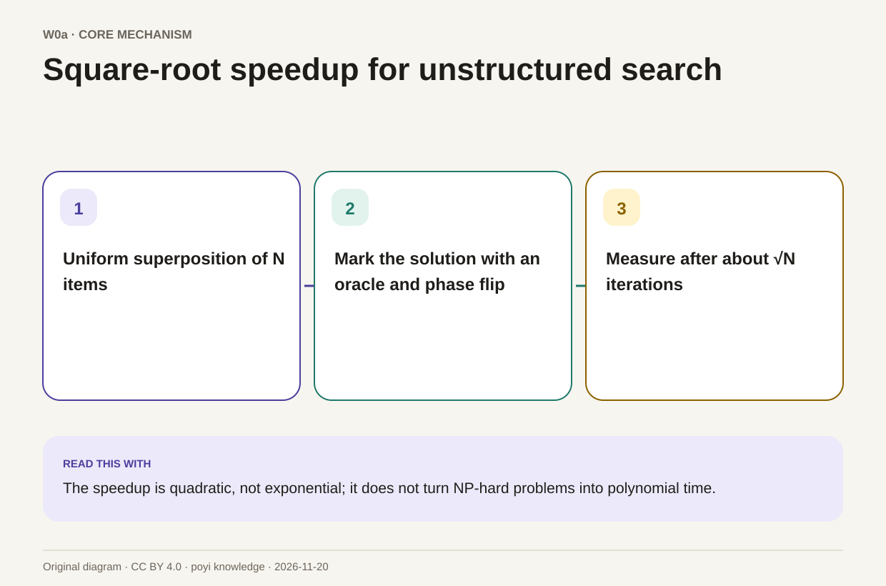
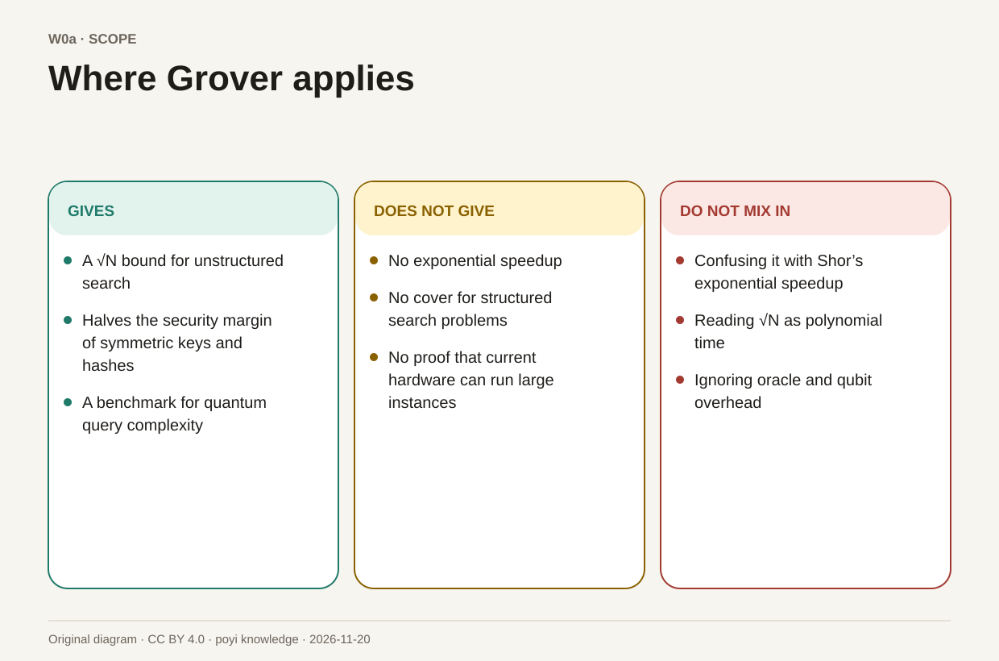

Principles
Theorem: Grover's Algorithm (格罗弗算法). Theorem (Grover 1996, plus BBBV 1997 and Zalka 1997): finding the one marked item among N candidates takes Θ(√N) queries on a quantum computer — and that is provably the limit.
The problem is as simple as it gets: N unordered records, exactly one of which satisfies a predicate f. Find it. Upper bound (Grover 1996): there is a quantum algorithm that finds the marked item using O(√N) evaluations of f, with success probability arbitrarily close to 1. Concretely, π/4·√N iterations, succeeding with probability about 1 − 1/N. Lower bound (BBBV 1997): any quantum algorithm, however designed, that can learn about f only by querying it needs at least Ω(√N) queries. Mind the quantifiers: this holds for every quantum algorithm, every f, and every required success probability.
Optimality (Zalka 1997): Grover's π/4·√N queries are optimal in the near-certain-success regime, and quantum search admits no better parallelisation than "carve the space into several independent quantum computers" — the most counter-intuitive difference between the quantum and classical worlds. Classical brute force scales linearly with more machines. Quantum search does not. Three corollaries for cryptography:
- Key search: brute-forcing an n-bit key drops from 2^n to 2^(n/2). Hash preimages: finding an n-bit hash preimage drops the same way, from 2^n to 2^(n/2). But collision search is not on this list. The classical birthday bound costs 2^(n/2); quantum collision search has its own algorithm (Brassard, Høyer and Tapp, 1997) costing O((N/r)^(1/3)), i.e. about 2^(n/3) for n-bit outputs. So the correct statement is: Grover does not halve the birthday bound. Quantum collision strength falls to 2^(n/3), and that is the work of a different algorithm. This is the detail that gets stated wrongly almost every time. The mechanism in one breath: prepare a uniform superposition over N basis states, use an oracle to flip the phase of the marked item, then reflect about the average to push the target's amplitude up. Repeat π/4·√N times, then measure. Note that the oracle does not "read data" — it turns the test "does this one satisfy f?" into a reversible unitary operation, and that is the technical heart of why the algorithm runs at all.
The more general form is amplitude amplification: any problem with a usable "good solution marker" drops into the same loop. Phase estimation supplies a second square-root speed-up, turning precision 1/ε into 1/√ε. These are the tools that post-quantum lattice, hash and signature schemes actually use when they analyse their own security.

Why it matters
Because it takes off only half of an exponent — and because the lower bound proves that half is the floor. The full story of the quantum threat needs both Shor's theorem and Grover's theorem side by side.
- Public-key cryptography: a cliff. Shor takes factoring and discrete logarithms from exponential time to polynomial time. Not "a bit slower" — zero. RSA and ECC fall together. - Symmetric cryptography: a step. Grover takes 2^n down to 2^(n/2) — just half — and the lower bound says that half is the limit.
So the complete answer to "what happens when quantum computers arrive?" is: public-key cryptography must be replaced; symmetric keys must get longer. That single sentence explains every seemingly odd choice in the post-quantum migration: why NIST recommends no symmetric algorithm below 128 bits of classical strength, why ML-KEM-768 is 192 bits classical and 128 bits quantum — because the public part has to survive Shor, and the private part only has to survive Grover.
Grover's deeper contribution is that it makes the threat schedulable. "A 128-bit key will not be enough forever" stops being speculation and becomes a theorem, and theorems can be planned around. The lower bounds (BBBV and Zalka) guarantee no worse surprises: there is no "and then in ten years somebody finds a quantum search that halves 2^(n/2) again". The floor of quantum search is something you can sign off on.
One more thing worth stating plainly: Grover is a warning, not a catastrophe. 2^128 AES-128 encryptions is still an absurd amount of computation. What deserves anxiety today is not Grover but ordinary negligence — "your key derivation uses MD5", "your RNG was never seeded". Those are today's emergency wounds; Grover is the slow disease.
Applications
Grover has never broken anything. Its job is to be a ruler.
- It relabels every security number we quote. "AES-128 gives 128 bits of security" now needs the footnote "64 bits against a quantum adversary"; "SHA-256 gives 128 bits of collision resistance" has to be discounted in the quantum world to roughly 2^85.3. Once the line "a 256-bit symmetric key equals 128-bit quantum security" is drawn, the parameter standards for the entire post-quantum era follow from it.
- It sets the parameters of post-quantum schemes. The parameter sets in FIPS 203/204/205 are all cut on the "at least 128 bits of quantum strength" line. NIST IR 8547 states that every NIST-approved symmetric primitive offering at least 128 bits of classical security is believed to meet Category 1, and that 112-bit symmetric algorithms will be disallowed in 2030. - It influences hash function choices. Because quantum collision resistance is 2^(n/3) rather than 2^(n/2), hash-based signature schemes such as SPHINCS+ (SLH-DSA) have to output 128 bits: their quantum collision strength is only about 2^42.7, so security has to be bought with parameter bulk. NIST issued the initial draft of SP 800-230 in April 2026, adding extra parameter sets for SLH-DSA, precisely to trade signature size against security bits in constrained use cases. - It sets a ceiling on "generic attacks". Quantum security proofs routinely work in the quantum random-oracle model, which is exactly Grover treated as the universal model for black-box search. - It also warns engineers off the wrong track. A threat that Grover halves and a bug that lets users pick their own IV are not in the same universe.
Limits & attacks
Grover's attack surface is not mathematical. It is physical.
- Depth is the killer, not qubit count. Grassl et al. (2016) estimate that breaking AES-128 needs about 2,953 logical qubits but a T-depth of roughly 2^80; AES-192 needs 4,449 logical qubits at T-depth 2^112; AES-256 needs 6,681 logical qubits at T-depth 2^144. The qubit count looks modest; the number of sequential steps does not — 2^80 is about 10^24 error-corrected gate operations. - Hash preimages are worse. Amy et al. (2016): finding a SHA-256 preimage with Grover needs only about 2^12.6 (≈6,200) logical qubits, but about 2^153.8 surface-code cycles. Preimage search is cheap in qubits and brutal in time; key search is expensive in both. - You cannot fix it with more machines. Zalka proved that quantum search admits no parallelisation better than splitting the space across independent quantum computers. Classical brute force scales linearly with hardware; Grover does not.
- Noise kills amplitude amplification outright. Every iteration of Grover's loop has to run one full AES-128 coherently on a superposition of dimension 2^128, and it has to run 2^64 times. Decoherence destroys the superposition long before the 2^64th iteration; error correction is where the real bill lands. - Query count is not wall-clock time. Turning "is this candidate key correct?" into a reversible quantum oracle may itself cost more than the search — especially when the key derivation has structure. - Know where the lower bound applies. BBBV and Zalka bound black-box search. An attacker who can attack your implementation — your RNG, your key derivation, your protocol logic — never needs Grover. Grover is the worst-case floor, not the best attack.
- It does not touch the birthday bound. Quantum collision resistance is 2^(n/3) (Brassard, Høyer and Tapp, 1997), not 2^(n/2). Anyone concluding that "Grover halves the birthday bound" has mixed two different results together. SHA-256's quantum collision strength is about 2^85.3 and SHA-512's about 2^170 — both still hold up.
- And the hardware reality: today's machines (IBM's roadmap puts Starling in 2029 at 200 logical qubits and a hundred million gates; Google's roadmap targets roughly a million physical qubits around 2029) remain orders of magnitude short of "2^64 coherent full AES-128 evaluations".

History
- 1996: Lov Grover presents A Fast Quantum Mechanical Algorithm for Database Search at STOC (pp. 212-219), and republishes it as Quantum Mechanics Helps in Searching for a Needle in a Haystack in Physical Review Letters the following year, which is what brought it to the physics community's attention. The idea had been found independently elsewhere — Boyer, Brassard, Høyer and Tapp published their own variant in 1996. A widely repeated detail: it took the quantum computing community about a year to notice the paper at all.
- 1997: the theoretical foundation is laid in one sweep. BBBV, Strengths and Weaknesses of Quantum Computing (SIAM Journal on Computing 26(5):1510-1523), proves the Ω(√N) lower bound; Zalka, in Physical Review A, proves Grover's algorithm is optimal and cannot be parallelised better; Brassard, Høyer and Tapp publish Quantum Algorithm for the Collision Problem, giving the 2^(n/3) quantum collision result. - 2016: Grassl et al., On the Quantum Complexity of Breaking Symmetric Ciphers, work out for the first time what breaking AES with a quantum computer actually costs; Amy, Mosca and Nielsen produce the corresponding resource estimates for SHA-256 preimages. - 2016–2024: post-quantum standardisation. The call, the review, the selection, the standards — every parameter threshold was set against two lines at once: strength under Shor and strength under Grover. - 13 August 2024: FIPS 203/204/205 are published; in the same year Google demonstrates error correction below threshold, moving "error correction is feasible" from theory to hardware. - 2025–2026: quantum hardware keeps scaling (IBM's Nighthawk has 120 qubits and runs 5,000-7,500 gates; IBM's roadmap places its first fault-tolerant machine in 2029 with 200 logical qubits); SP 800-227 and SP 800-230 further institutionalise post-quantum parameters. But breaking AES-128 with Grover needs 2^64 coherent full AES-128 evaluations — even on the most optimistic error-correction budget, that is more than 10^19 oracle calls. We are orders of magnitude away.
Worked example & verification
Formal model and reproduction steps
[\Pr[\mathrm{Bad}_A(\lambda)]\le \varepsilon(\lambda)]
Grover's Algorithm: the registered public parameters, key material or randomness, and message are mapped through the stated transformation to an output checked against the registered criterion. The worked example is a structural reproduction, not a new test vector; parameter ranges, standard versions and implementation details remain source-bound.
References
- Wikipedia search entry for 格罗弗算法. https://zh.wikipedia.org/w/index.php?search=%E6%A0%BC%E7%BD%97%E5%BC%97%E7%AE%97%E6%B3%95
- Handbook of Applied Cryptography (Menezes, van Oorschot, Vanstone). https://www.cacr.math.uwaterloo.ca/hac/